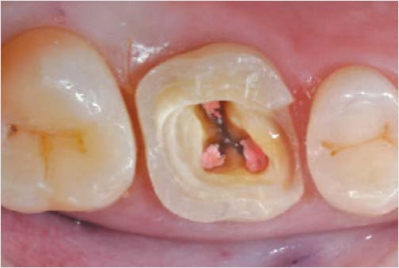
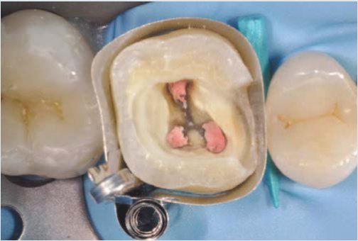
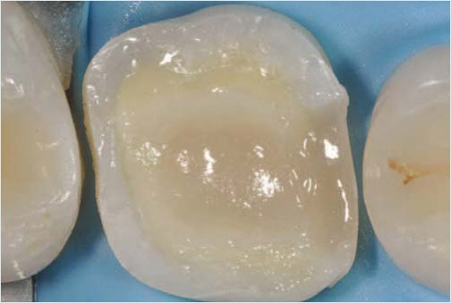
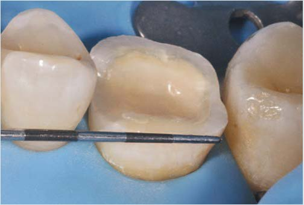
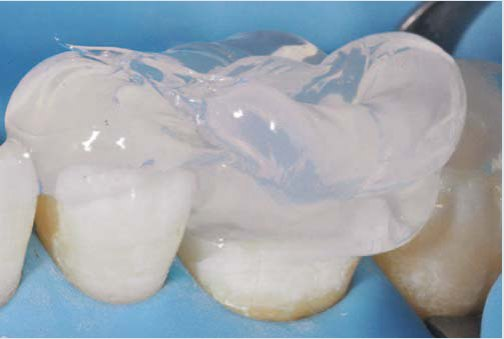
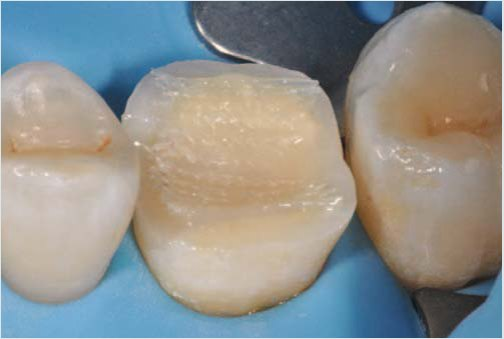
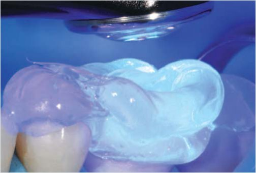
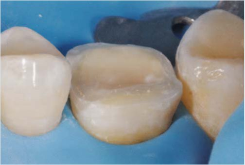
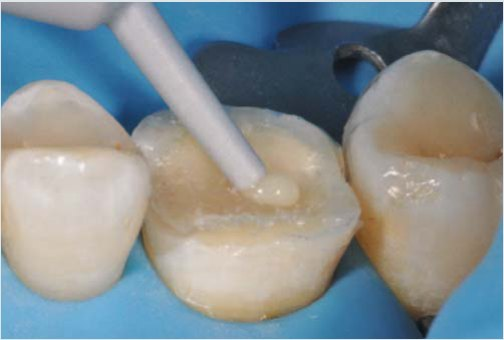

Практичні курси · журнал «ДентАрт» 2013 №3 (72)
Скловолоконне армування реставрацій після ендодонтичного лікування
FIBER-REINFORCED RESIN COATING FOR ENDOCROWN PREPARATIONS
Вступ
Тенденція ендодонтично лікованих зубів до фрактур — досі часто обговорюване питання.1 Біомеханіка ендодонтично лікованих зубів принципово змінюється через втрату твердих тканин внаслідок патологій, що ведуть до цього (карієс, фрактури, препарування порожнини), ендодонтичне лікування (створення доступу, формування кореневих каналів) та інвазивні реставраційні процедури (установка штифта, виготовлення коронки).2 Усі ці чинники можуть призвести до послідовної втрати твердих тканин коронки і кореня зуба, що збільшує крихкість і тим самим створює ризик фрактур ендодонтично лікованих зубів.3 Дуже часто адгезивна реставрація ендодонтично лікованих зубів охоплює як корінь, так і коронку — для запобігання подальшій втраті твердих тканин, оскільки адгезія забезпечує значну ретенцію матеріалу без необхідності агресивного макроретенційного препарування.4-6
У деяких випадках використання адгезивних накладок, так званих ендокоронок, для відновлення ендодонтично лікованих зубів стає звичнішим, ніж виготовлення класичних повних коронок. Причина цього — зміна парадигми лікування: більш щадний підхід збереже тканини зуба і залишить можливість для повторного втручання у разі поломки. Більше того, ендокоронки дозволяють уникнути багатьох технічних етапів при виготовленні, таких як фіксація штифта, відновлення кукси, виготовлення тимчасової коронки і потенційне подовження коронки, які значно збільшують тривалість і вартість лікування. Кілька лабораторних і клінічних досліджень підтвердили обґрунтованість цього адгезивного підходу, особливо при відновленні молярів.4,7-12 Проте навіть при виготовленні консервативних накладок/ендокоронок можливі похибки прилягання нижче рівня цементо-емалевої межі.12-14 При експлуатації відсутність металу або міцних керамічних субструктур, як у повних коронках, збільшує ризик виникнення тріщин. Для підвищення міцності була запропонована лейцитна кераміка і кераміка, посилена літій-десилікатом.15,16 Як альтернатива кераміці, були запропоновані композити з їх високою здатністю поглинання стресу і високою міцністю.8,10 У деяких лабораторних дослідженнях для відновлення горбків були використані композити, армовані скловолокном.15,17,18 Результати досліджень засвідчили, що окрім поліпшення міцності реставрацій, включення скловолокна в композитну структуру збільшує стійкість до поломок нижче цементо-емалевої межі. Шар, армований скловолокном, блокує стрес і зупиняє поширення тріщин. При виготовленні класичних непрямих композитних реставрацій композити, армовані скловолокном, як правило, включені в лабораторне виробництво як основні заготовки.15,19 На жаль, ця техніка непридатна при фрезеруванні композитної реставрації з CAD/CAM блоку або будь-якого виду керамічного матеріалу. Перед зняттям остаточного відбитку порожнини шар композиту, армованого скловолокном, наноситься на поверхню відпрепарованої порожнини зуба. Ця техніка дозволяє використовувати композит, армований скловолокном, з будь-якими видами реставраційних матеріалів для адгезивних накладок/ендокоронок.
Клінічний приклад
Подаємо приклад реставрації ендодонтично лікованого першого верхнього моляра, що потребує відновлення (фото 1). Послідовна непряма техніка виготовлення ендокоронки виконується у два етапи. Під час першого етапу20 порожнина препарується під місцевою анестезією. Після ретельної ізоляції порожнини (фото 2) на всю поверхню дентину і тонкі під'ясенні емалеві краї мезіальної поверхні наноситься адгезив і полімеризується.21 Далі на ці поверхні наноситься достатня кількість композиту і полімеризується. Метою цього є заповнення порожнини зуба з усуненням усіх піднутрень, покриттям усього дентину і переміщенням пришийкових країв на 1 мм вище ясенного краю. Для цього використовувався наногібридний композитний матеріал з низьким рівнем усадки Тетрік ІвоЦерам (Івоклар-Вівадент).


Враховуючи товщину майбутньої реставрації, рекомендується товщина шару не менше 1,5 мм.9 Попри те, що адгезивна фіксація не вимагає створення якого-небудь певного скосу на краях порожнини або макроретенційної геометрії, створення увігнутості посередині порожнини зуба допоможе при позиціонуванні реставрації під час установки (фото 3). Наступний крок — установка заздалегідь просоченої двоспрямованої скловолоконної сітки Дентапрег УФМ (АДМ) на верхній край підготовленої порожнини. Відповідна мезіодистальна довжина скловолоконної сітки може бути визначена безпосередньо в порожнині рота за допомогою пародонтального зонда (фото 4). Після визначення довжини волокна обрізуються і зберігаються поза порожниною рота із захистом від світла. Далі виготовляється прозорий силіконовий ключ з Еліт Транспарент, Жермак СпА, Бадіа Полесіне для отримання відбитка порожнини моляра і оклюзійних поверхонь зубів, що стоять поруч (фото 5). Для установки скловолокна наносять шар текучого композиту Тетрік ЕвоФлоу (Івоклар-Вівадент) завтовшки 0,5 мм, який треба залишити, не полімеризуючи. Після цього в шар з текучого композиту встановлюють скловолоконну сітку зі злегка відкритими чарунками (фото 6). Скловолокно повністю адаптується до порожнини за допомогою індивідуального силіконового ключа і полімеризується (фото 7). Другий шар текучого композиту наносять поверх сітки так, щоб покрити усі видимі волокна, і полімеризують (фото 8). Краї емалі обробляють дрібнозернистими алмазними борами Компошейп (Інтенсив) до отримання чітких країв перед остаточним відбитком (фото 9). Після цього виготовляється непряма реставрація. У випадку, згаданому вище, ендокоронка була відфрезерована з композитного CAD/CAM блоку Лава Ултімейт (3М ЕСПЕ) (фото 10). Під час цього етапу фрезерована поверхня реставрації і порожнина були адгезивно підготовлені і реставрація зафіксована на традиційний фотополімерний мікрогібридний композит.22








Обговорення
В останні 30 років оптимальна якість сучасних адгезивних систем та акцент на малоінвазивних принципах відновлення в усіх галузях стоматології сприяли розвитку адгезивної техніки для ендодонтично лікованих зубів. Попри те, що металеві реставрації і класичні коронки з опорою на штифтові конструкції в корені залишаються досить поширеними, їх інвазивність як для кореня, так і для коронки піддається великій критиці. Тепер доступні нові консервативні техніки, що ґрунтуються на адгезії.3, 23-25 У разі невеликих і середніх порожнин прямі композитні реставрації і непрямі вкладки/накладки повністю замінили металеві реставрації.26-29 У разі глибоких порожнин або необхідності перекриття горбків адгезивні ендокоронки, виготовлені з кераміки або композиту, є непоганою альтернативою класичним повним коронкам при відновленні естетики і функції ендодонтично лікованих зубів.4,8,10-12,15
У наведеному клінічному випадку значна втрата твердих тканин у зв'язку з патологією і ендодонтичним втручанням вимагає використання мінімально-інвазивної ендокоронкової реставрації замість повної коронки. Ця техніка дозволяє зберегти дентин і передусім периферійну емаль, що дасть можливість вклеїти краї майбутньої реставрації і благотворно вплине на крайову стабільність.30 Адгезивні процедури дозволяють не встановлювати штифт і не відновлювати куксу зуба, що було б необхідно при підготовці до класичної коронки. Більше того, адгезивна підготовка порожнини дозволяє виконати реставрацію вище ясенного краю, без контакту з пародонтом, що важливо для адекватної гігієни і здоров'я пародонту.1,31 Після ізоляції рабердамом мікрогібридний композит вноситься в порожнину. Незалежно від складу композиту, ним можна підняти краї порожнини в під'ясеннних зонах, також композитом можна нівелювати піднутрення порожнини і зберегти тверді тканини зуба. Окрім цих структурних функцій, шар композиту, нанесений на дентин негайно після препарування порожнини, забезпечує її оптимальну герметизацію і тимчасовий захист після ендодонтичного лікування.32-34 Також зводиться до мінімуму вплив на композит води і ротової рідини.35 Композитна основа дозволяє виготовляти тонші вкладки і накладки, світлу легше проникати через остаточну реставрацію під час полімеризації, і це дає можливість використати для фіксації фотополімерні композити замість композитів хімічного або подвійного затвердіння. Крім того, особливо в ендодонтично лікованих зубах ця композитна основа зміцнює стінки порожнини упродовж часової фази.12 Згодом заздалегідь просочена двоспрямована скловолоконна сітка Дентапрег УФМ (АДМ) вноситься в порожнину. Композити, армовані скловолокном, тестувалися передусім як основні матеріали в незнімних часткових протезах і продемонстрували високі механічні характеристики у порівнянні з традиційними наповненими композитами.18, 36,37 Зростає їх використання в поодиноких реставраціях з перекриттям горбків для запобігання появі тріщин у традиційних композитах у бічних ділянках з підвищеним навантаженням.15, 17-19, 38 Шар композиту, армованого скловолокном, розташований у зоні розтягування між реставрацією і порожниною.37 У разі класичної непрямої техніки ця конфігурація виконується шляхом внесення скловолокна в основу композитної накладки під час лабораторного виготовлення. У разі виникнення вертикальної тріщини усередині реставрації шар композиту, армованого скловолокном, може уповільнити або зупинити поширення тріщини через підлеглі тканини і тим самим запобігти безповоротним фрактурам. Враховуючи орієнтацію скловолокна, вибір двоспрямованих або плетених волокон є більш відповідним, ніж односпрямованих, оскільки у роті реставрація піддається різноспрямованим жувальним навантаженням.15,18 Хоча деякі автори вважають, що в поодиноких реставраціях поліпшення стійкості до поломки — єдина перевага використання композитів, армованих скловолокном,17 Дір та ін.15 нещодавно виявили, що наявність мультиспрямованого скловолоконного шару під композитною реставрацією, яка перекриває горбки, також збільшує стійкість ендодонтично лікованих молярів до фрактур. У специфічному випадку, поданому вище, скловолоконний шар внесений у порожнину до зняття відбитка. Внесення скловолоконного шару виконувалося через шар текучого композиту. Але високонаповнений мікрогібридний композит, який був використаний для заповнення порожнини, є найкращим вибором, оскільки текучі композити мають високий ступінь полімеризаційної усадки і можуть бути недостатньо стійкі до деформацій під навантаженням.39,40 З іншого боку, високонаповнені мікрогібридні композити досить складно піддаються формуванню тонкого шару через високу в'язкість. Низька в'язкість текучого композиту забезпечує рівномірний розподіл матеріалу по заздалегідь просоченій скловолоконній сітці і знижує ризик виникнення пор. Використання індивідуального прозорого силіконового ключа для внесення скловолоконної сітки при полімеризації поліпшує адаптацію сітки до геометрії порожнини і обмежує товщину проміжного шару. Цей аспект відіграє важливу роль, коли планується виготовлення тонкої реставрації. До того ж, індивідуальний ключ спрощує внесення і полімеризацію шару композиту, армованого скловолокном, у порівнянні з використанням специфічних металевих інструментів, рекомендованих виробником Дентапрег Форк (АДМ). Після полімеризації шару, армованого скловолокном, волокна покривають шаром текучого композиту для їх захисту від випадкового впливу до установки ендокоронки.22,37 Введення скловолоконного шару в порожнину зуба до зняття остаточного відбитка дає можливість лікареві вибирати різні реставраційні методики. Для виготовлення реставрацій можуть бути використані різні матеріали, такі як польовошпатна кераміка, посилений склокерамічний гібридний композит, CAD/CAM керамічні або композитні блоки. У науковій літературі досі немає даних про те, що якийсь матеріал більше рекомендований для такого типу реставрацій. Автори надають перевагу гібридним композитним матеріалам через їх стійкість до стресу і практичні переваги, такі як можливість легкого модифікування або лагодження поверхні.42 Зокрема, замість класичних лабораторних реставрацій можуть бути використані композитні блоки CAD/CAM Лава Ултімейт (3М ЕСПЕ) для запобігання дефектам, властивим прямій техніці, що збільшує характеристики міцності реставрації. Лабораторне внесення скловолоконного шару в основу фрезерованої композитної CAD/CAM накладки якщо і можливе теоретично, то передбачає препарування реставрації, що компрометує її гомогенність.
Висновок
Адгезивні накладки, часто звані ендокоронками, усе частіше застосовуються як реставраційна альтернатива повним коронкам для девітальних зубів. Їх переваги — це мінімальна інвазивність, простота препарування і оптимальне коронкове запечатування. Ризик, пов'язаний з цими реставраціями, хоча і мінімальний, але можливий — виникнення вертикальної фрактури комплексу зуб/реставрація, що часто закінчується видаленням зуба. Подана клінічна техніка з використанням шару композиту, армованого скловолокном, була розроблена для використання з CAD/CAM композитами або керамічними реставраціями. Вона може зменшити ризик безповоротних фрактур і тим самим підвищити ступінь надійності реставрацій девітальних зубів.
Література
- Dietschi D. & Bouillaguet S. (2006) Restoration of the endodontically treated tooth In: Cohen S., Hargreaves K. M. (eds) Pathways of the Pulp Elsevier Mosby, St. Louis, Mo 777-807.
- Dietschi D., Duc O., Krejci I., & Sadan A. (2007) Biome chanical considerations for the restoration of endodonti cally treated teeth: a systematic review of the literature — part 1. Composition and micro- and macrostructure alterations Quintessence International 38(9) 733-743.
- Robbins J. W. (2001) Restoration of endodontically treated teeth In: Schwartz R. S., Summitt J. B., Robbins J. W. (eds) Fundamentals of Operative Dentistry: A Contemporary Approach Quintessence, Chicago, Ill 546-566.
- Krejci I., Duc O., Dietschi D., & de Campos E. (2003) Marginal adaptation, retention and fracture resistance of adhesive composite restorations on devital teeth with and without posts Operative Dentistry 28(2) 127-135.
- Mohammadi N., Kahnamoii M. A., Yeganeh P. K., & Navimi pour EJ (2009) Effect of fiber post and cusp coverage on fracture resistance of endodontically treated maxillary premolars directly restored with composite resin Journal of Endodontics 35(10) 1428-1432.
- Bitter K., & Kielbassa A. M. (2007) Post-endodontic restorations with adhesively luted fiber-reinforced composite post systems: a review American Journal of Dentistry 20(6) 3533-60.
- Lin C., Chang Y., & Pai C. (2011) Evaluation of failure risks in ceramic restorations for endodontically treated premo lar with MOD preparation. Dental Materials 27(5) 431-438.
- Magne P. & Knezevic A. (2009) Simulated fatigue resistance of composite resin versus porcelain CAD/CAM overlay restorations on endodontically treated molars Quintessence International 40(2) 125-133.
- Magne P. & Knezevic A. (2009) Thickness of CAD-CAM composite resin overlays influences fatigue resistance of endodontically treated premolars Dental Materials 25(10) 1264-1268.
- Lin C., Chang Y., & Pa C. (2009) Estimation of the risk of faiure for an endodontically treated maxillary premolar with MODP preparation and CAD/CAM ceramic restora tions Journal of Endodontics 35(10) 1391-1395.
- Bindl A., & Mo.rmann W.H. (1999) Clinical evaluation of adhesively placed Cerec endo-crowns after 2 years — preliminary results Journal of Adhesive Dentistry 1(3) 255-265.
- Bindl A., Richter B., & Mo.rmann W.H. (2005) Survival of ceramic computer-aided design/manufacturing crowns bonded to preparations with reduced macroretention geometry International Journal of Prosthodontics 18(3) 219-224.
- Bernhart J., Bra.uning A., Altenburger M. J., & Wrbas K. T. (2010) Pubmeted molars International Journal of Computerized Dentistry 13(2) 141-154.
- Fennis W. M. M., Kuijs R. H., Kreulen C. M., Roeters F. J. M., Creugers N. H. J., & Burgersdijk R. C. W. (2002) A survey of cusp fractures in a population of general dental practices. International Journal of Prosthodontics 15(6) 559-563.
- Dere M., Ozcan M., & Go.hring T. N. (2010) Marginal quality and fracture strength of root-canal treated mandibular molars with overlay restorations after thermocycling and mechanical loading Journal of Adhesive Dentistry 12(4) 287-294.
- Hitz T., Ozcan M., & Go.hring T. N. (2010) Marginal adaptation and fracture resistance of root-canal treated mandibular molars with intracoronal restorations: effect of thermocycling and mechanical loading Journal of Adhesive Dentistry 12(4) 279-286.
- Fennis W. M. M., Tezvergil A., Kuijs R. H., Lassila L. V. J., Kreulen CM, Creugers NHJ, & Vallittu PK (2005) In vitro fracture resistance of fiber reinforced cusp-replacing composite restorations Dental Materials 21(6) 565-572.
- Garoushi S. K., Lassila L. V. J., & Vallittu P. K. (2006) Fiber reinforced composite substructure: load-bearing capacity of an onlay restoration Acta Odontologica Scandinavica 64(5) 281-285.
- Garoushi S. K., Shinya A., Shinya A., & Vallittu P. K. (2009) Fiber-reinforced onlay composite resin restoration: a case report. Journal of Contemporary Dental Practice 10(4) 104-110.
- Rocca G. T, & Krejci I. (2007) Bonded indirect restorations for posterior teeth: from cavity preparation to provision alization Quintessence International 38(5) 371-379.
- Kra.mer N., Garc..a-Godoy F., Reinelt C., Feilzer A. J., & Frankenberger R. (2011) Nanohybrid vs. fine hybrid composite in extended Class II cavities after six years Dental Materials 27(5) 455-464.
- Rocca G. T., & Krejci I. (2007) Bonded indirect restorations for posterior teeth: the luting appointment Quintessence International 38(7) 543-553.
- Schwartz R. S., & Robbins J. W. (2004) Post placement and restoration of endodontically treated teeth: a literature review Journal of Endodontics 30(5) 289-301.
- Dietschi D., Duc O., Krejci I., & Sadan A. (2008) Biome chanical considerations for the restoration of endodonti cally treated teeth: a systematic review of the literature, part II (evaluation of fatigue behavior, interfaces, and in vivo studies) Quintessence International 39(2) 117-129.
- Pontius O., & Hutter J. W. (2002) Survival rate and fracture strength of incisors restored with different post and core systems and endodontically treated incisors without coronoradicular reinforcement Journal of Endodontics 28(10) 710-715.
- Can Say E., Kayahan B., Ozel E., Gokce K., Soyman M., & Bayirli G. (2006) Clinical evaluation of posterior composite restorations in endodontically treated teeth Journal of Contemporary Dental Practice 7(2) 17-25.
- Adolphi G., Zehnder M., Bachmann L. M., & Go.hring T. N. (2007) Direct resin composite restorations in vital versus root-filled posterior teeth: a controlled comparative long term follow-up Operative Dentistry 32(5) 437-442.
- Salameh Z., Sorrentino R., Papacchini F., Ounsi H. F., Tashkandi E., Goracci C., & Ferrari M. (2006) Fracture resistance and failure patterns of endodontically treated mandibular molars restored using resin composite with or without translucent glass fiber posts Journal of Endodontics 32(8) 752-755.
- Nagasiri R., & Chitmongkolsuk S. (2005) Long-term survival of endodontically treated molars without crown coverage: a retrospective cohort study Journal of Prosthetic Dentistry 93(2) 164-170.
- Pashley D. H., Tay F. R., Breschi L., Tjaderhane L., Carvalho R. M., Carrilho M., & Tezvergil-Mutluay A. (2011) State of the..art etch-and-rinse adhesives Dental Materials 27(1) 1-16.
- Koth D. L. (1982) Full crown restorations and gingival inflammation in a controlled population Journal of Prosthetic Dentistry 48(6) 681-685.
- Bertschinger C., Paul S. J., Lu. thy H., & Scharer P. (1996) Dual application of dentin bonding agents: effect on bond strength American Journal of Dentistry 9(3) 115-119.
- Dietschi D., Monasevic M., Krejci I., & Davidson C. (2002) Marginal and internal adaptation of class II restorations after immediate or delayed composite placement Journal of Dentistry 30(5–6) 259-269.
- Magne P., Kim T. H., Cascione D., & Donovan T. E. (2005) Immediate dentin sealing improves bond strength of indirect restorations Journal of Prosthetic Dentistry 94(6) 511-519.
- Ito S., Hashimoto M., Wadgaonkar B., Svizero N., Carvalho R. M., Yiu C., Rueggeberg F. A., Foulger S., Saito T., Nishitani Y., Yoshiyama M., Tay F. R., & Pashley D. H. (2005) Effects of resin hydrophilicity on water sorption and changes in modulus of elasticity Biomaterials 26(33) 6449-6459.
- Bae J., Kim K., Hattori M., Hasegawa K., Yoshinari M., Kawada E., & Oda Y. (2004) Fatigue strengths of particulate filler composites reinforced with fibers Dental Materials 23(2) 166-174.
- Go.hring T. N., & Roos M. (2005) Inlay-fixed partial dentures adhesively retained and reinforced by glass fibers: clinical and scanning electron microscopy analysis after five years European Journal of Oral Sciences 113(1) 60-69.
- Garoushi S., Vallittu P. K., & Lassila L. V. J. (2007) Fracture resistance of short, randomly oriented, glass fiber-rein forced composite premolar crowns. Acta Biomaterialia 3(5) 779-784.
- De Munck J., Van Landuyt K. L., Coutinho E., Poitevin A., Peumans M., Lambrechts P., Braem M., & Van Meerbeek B. (2005) Fatigue resistance of dentin/composite interfaces with an additional intermediate elastic layer European Journal of Oral Sciences 113(1) 77-82.
- Rocca G. T., Gregor L., Sandoval M. J., Krejci I., & Dietschi D. (2011) In vitro evaluation of marginal and internal adaptation after occlusal stressing of indirect class II composite restorations with different resinous bases and interface treatments: post-fatigue adaptation of indirect composite restorations Clinical Oral Investigations In press
- Magne P., Schlichting L. H., Maia H. P., & Baratieri L. N. (2010) In vitro fatigue resistance of CAD/CAM composite resin and ceramic posterior occlusal veneers Journal of Prosthetic Dentistry 104(3) 149-157.
- Rocca G. T., Bonnafous F. C., Rizcalla N., & Krejci I. (2010) A technique to improve the esthetic aspects of CAD/CAM composite resin restorations Journal of Prosthetic Dentistry 104(4) 273-275.